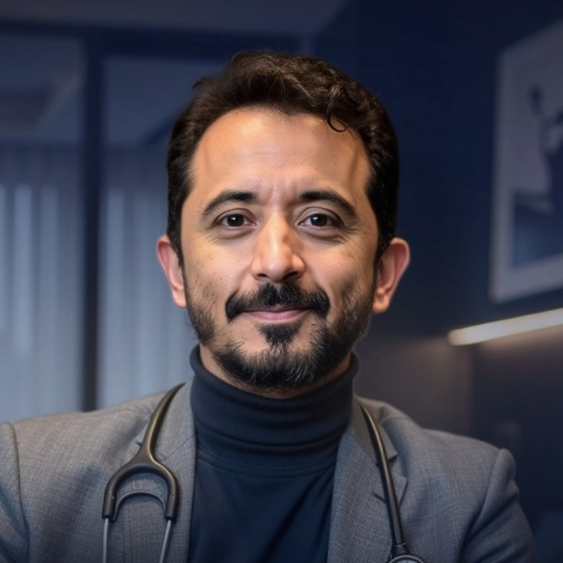
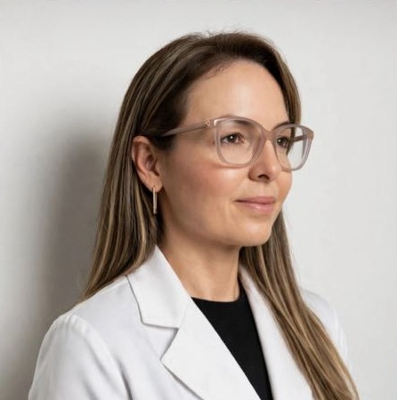

Atendimento médico especializado com o Dr. Gabriel Neves Carneiro (Urologista) e a Dra. Narcisa Malheiro (Pediatra e Neonatologista). Estrutura diagnóstica completa, cirurgias minimamente invasivas e atenção integral em Bom Jesus da Lapa e em toda a região oeste e sudoeste da Bahia.
Formação especializada no Hospital Sírio-Libanês e Hospital 9 de Julho para procedimentos precisos e recuperação mais rápida.
Acompanhamento contínuo do crescimento, desenvolvimento infantil e cuidados dedicados aos recém-nascidos e prematuros.
Ultrassom de rins e próstata, estudo urodinâmico, urofluxometria e biópsias com segurança diagnóstica na Clínica Uroderma.
Atendimento itinerante e periódico aproximando a medicina de ponta de pacientes em todo o sudoeste e oeste baiano.
Tratamentos modernos baseados nas melhores evidências científicas para todas as idades.
Médicos especialistas com sólida formação acadêmica e compromisso com o cuidado ético e atencioso.

Graduado em Medicina pela Universidade Federal da Bahia (UFBA), com residências em Cirurgia Geral e Urologia pelo Hospital Geral Roberto Santos. Especializações em Cirurgia Minimamente Invasiva pelo Hospital Sírio-Libanês e Cirurgia Robótica pelo Hospital 9 de Julho.

Graduada pela Universidade Federal de Alagoas (UFAL), com residência médica em Pediatria pelo Hospital Universitário Professor Edgard Santos (HUPES / UFBA) e formação em Neonatologia pela Maternidade Professor José Maria de Magalhães Neto / Santa Casa de Misericórdia da Bahia.
Um caminho prático e sem burocracia para você e sua família.
Você seleciona o médico e a cidade de sua preferência. A mensagem já vai pronta para a recepção verificar as datas e confirmar o horário.
Atendimento médico humanizado, atencioso e sem pressa, com escuta atenta dos sintomas, histórico clínico e exame físico rigoroso.
Definição do plano de cuidados: realização de exames complementares (se necessários), orientações preventivas ou condutas cirúrgicas precisas.
Selecione a especialidade e a cidade para visualizar os endereços das clínicas e agendar sua consulta.
Diretrizes da SBU, AUA e EAU. Informações claras e respeito à sua saúde e privacidade.
O atendimento é realizado por ordem de chegada para acolher adequadamente os pacientes da zona rural e região. Manhã a partir das 8h30 e tarde a partir das 14h (20 a 30 vagas por dia).
A consulta urológica tem retorno já incluso (geralmente entre 30 e 60 dias) para avaliação dos exames laboratoriais e diagnósticos solicitados pelo médico.
Aceitamos Pix, dinheiro em espécie, cartão de débito e cartão de crédito com parcelamento. Emitimos nota fiscal completa para pedido de reembolso no seu plano de saúde.
Traga documento com foto, exames anteriores (laudos e imagens), lista dos remédios em uso e pedido médico (se houver). Pacientes idosos devem vir sempre acompanhados.